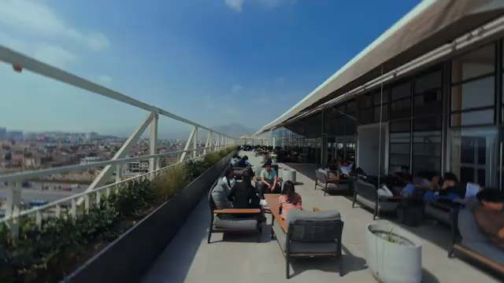

La ruta del estudiante

Sábado 14 y martes 17 de noviembre
Gratis · Presencial el 14 en UCSUR Sede Norte · Virtual el 17

Sábado 14 y martes 17 de noviembre
Gratis · Presencial el 14 en UCSUR Sede Norte · Virtual el 17